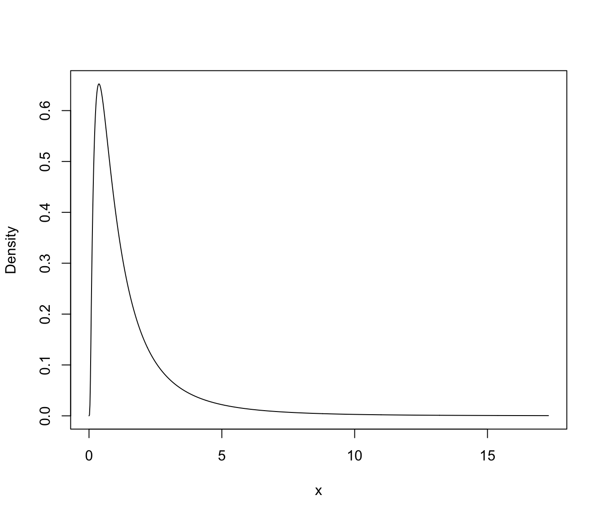

Recover parameters in the original scale
MclustBoundedParameters.RdGiven a GMM for bounded data, computes the means and variances in the original scale from the estimated mixture components parameters dataset using simulations.
Examples
# \donttest{
x = rlnorm(1000, 0, 1)
mod = densityMclustBounded(x, lbound = 0, lambda = 0)
summary(mod, parameters = TRUE)
#> ── Density estimation for bounded data via GMMs ───────────
#>
#> Boundaries: x
#> lower 0
#> upper Inf
#>
#> Model E (univariate, equal variance) model with 1 component
#> on the transformation scale:
#>
#> log-likelihood n df BIC ICL
#> -1423.435 1000 2 -2860.685 -2860.685
#>
#> x
#> Range-power transformation: 0
#>
#> Mixing probabilities:
#> 1
#> 1
#>
#> Means:
#> 1
#> 0.007990182
#>
#> Variances:
#> 1
#> 0.9915365
plot(mod, what = "density")

# transformed parameters (from log-normal distribution)
# mean
with(mod$parameters,
exp(mean + 0.5*variance$sigmasq))
#> 1
#> 1.65493
# var
with(mod$parameters,
(exp(variance$sigmasq) - 1)*exp(2*mean + variance$sigmasq))
#> 1
#> 4.643273
# using simulations
MclustBoundedParameters(mod)
#> $mean
#> [,1]
#> x 1.655112
#>
#> $variance
#> [,1]
#> x 4.561358
#>
# }